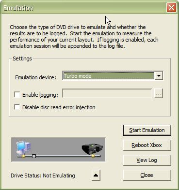

The XbGameDisc tool enables you to emulate the game disc using the layout you specified in an .xlo file. The emulation process is presented in the following topics.
To see how your disc layout performs, you can emulate the layout using the Xbox Game Disc Emulation system. When you perform the emulation, you play the game as your user normally would. XbGameDisc analyzes the order and frequency that the game accesses files. It uses the data from the emulation run to move files that are accessed first or frequently to the outside edge of the game disc. This enables faster accesses.
To emulate your game disc, click the Emulator button on the tool bar, or click Emulate on the Tools menu. The Emulation dialog box appears, as shown here:

Note Before using the Xbox Game Disc Emulation system, you must set up the Xbox Game Disc Emulation software. (See How to Install the Xbox Game Disc Emulation Software for the First Time for more information.) Unlike previous versions of the Xbox Game Disc Emulation system, XbGameDisc does not require you to load a layout file before performing emulation. It performs emulation with whatever layout you are currently working on in XbGameDisc.
In the Emulation dialog box, choose the type of DVD drive you want to emulate by selecting an option from the Emulation device drop-down list. You can select from the following choices:
Note Using antivirus software while emulating can significantly impact performance. Turn off real-time antivirus software while emulating to ensure accurate performance.
You can also log the results of your emulation session to a file by selecting the Enable logging check box and entering the path and file name to a log file in the supplied text box. Emulation logging information is always appended to the end of the indicated file, even across different emulation sessions.
Note You must log the results of your emulation session if you want to use the optimizer to adjust the layout of your game disc.
Note Emulation logs created with versions of XbGameDisc released prior to June 20003 do not work with versions of XbGameDisc released in June 2003 or later.
To disable error injection during emulation, select the Disable disc read error injection check box.
Begin emulation by clicking Start Emulation or by pressing Alt+S. The caption of the Start Emulation button changes to Stop Emulation. To stop emulation, click Stop Emulation or press Alt+S.
To reboot the Xbox Development Kit, click Reboot Xbox. You may reboot the Xbox development kit at any time, whether emulation is running or not.
Click View Log to open the emulation log in Notepad. You may view the log only when emulation is stopped. However, you do not need to select the Enable logging check box to view the log file, provided you recorded a log file in a previous emulation session.
To emulate the effect of the user pressing the drive tray button on an Xbox console, click the Eject button. The emulation system behaves exactly as if the real drive tray had been opened or closed. The Eject button has no effect while emulation is not running.
To exit XbGameDisc emulation mode, click Close. The emulation system stops emulation and returns you to the regular XbGameDisc interface.
Whenever the Xbox kernel reads a block from disc, it must begin reading at an even-numbered block, even if it is reading a one-block file. For this reason, game disc emulation may appear in the log file to be reading more than one file at a time, when in reality, it ignores data that was not requested by the running game title. As an example, consider the following group of files:
| Sector | File |
|---|---|
| 1000 | fool.x |
| 1001 | bard.x |
| 1002 | bane.x |
If the title reads the 2048-byte file bard.x, the kernel requests a 2-block read beginning at fool.x. The kernel ignores the data in fool.x and returns the data in bard.x (but emulation logging shows a read beginning at fool.x). If the title read the file bane.x, logging correctly reports a read beginning at bane.x (because bane.x is located at an even-numbered block).
When emulation logging is enabled, the XbGameDisc tool produces a log file. Each line in the body of the log file represents a single disc access, and each line has the following format:
TIMESTAMP REQUEST SeekTime ReadTime LayerNum FirstSector NumSectors FileName
The fields in each line have the following meanings:
| Log field | Meaning |
|---|---|
| TIMESTAMP | Relative time offset of the request (in milliseconds) measured from the starting time of the emulation session. |
| SeekTime | Time in microseconds required for the head to move to perform the seek. |
| ReadTime | Time in microseconds required for a read to occur. |
| LayerNum | The layer the data was read from; 0 represents Layer 0, and 1 represents Layer 1. |
| FirstSector | Logical Block Address (LBA) of the first sector accessed. |
| NumSectors | Number of sectors accessed. |
| FileName | Full path and file name of the file accessed. In instances where the drive reads ahead and caches adjacent files, this field lists all the files accessed, separated by commas. |
The following is an example of log file output:
******************** EMULATION STARTED ******************** Date/Time: 07/26/2002 10:41 AM Layout Name: C:\MyLayouts\TestLayout.XLO Drive Emulated: Thomson 1.24 Time (ms) Operation Seek(us) Read(us) Lyr 1st LBA LBAs Rd File(s) Accessed 000000010 REQUEST 009100 0050000 0 1262552 0008194 D:\Kiosk\default.xbe 000000020 REQUEST 002200 0005000 0 0152708 0000166 D:\tp2002\audio\music\low6.asf 000000035 REQUEST 005620 0007200 0 0166516 0000459 D:\tp2002\art\anim\batters.o 000000101 REQUEST 010008 0010000 0 0104407 0000008 D:\tp2002\art\team\2sde.xsh 000000118 REQUEST 008020 0010000 0 0104416 0000008 D:\tp2002\art\team\2sde.xsh 000000205 REQUEST 009000 0010000 0 0104425 0000008 D:\tp2002\art\team\2sht.xsh 000001044 REQUEST 050000 0577000 1 1726145 0010456 D:\tp2002\audio\pa\zzz2paa.big Date/Time: 07/26/2002 10:42 AM ******************** EMULATION STOPPED ********************
The optimizer feature of the XbGameDisc tool uses the information in log files to optimize the layout of your game disk. The XbGameDisc tool stores each emulation run in the log file as a separate entry.